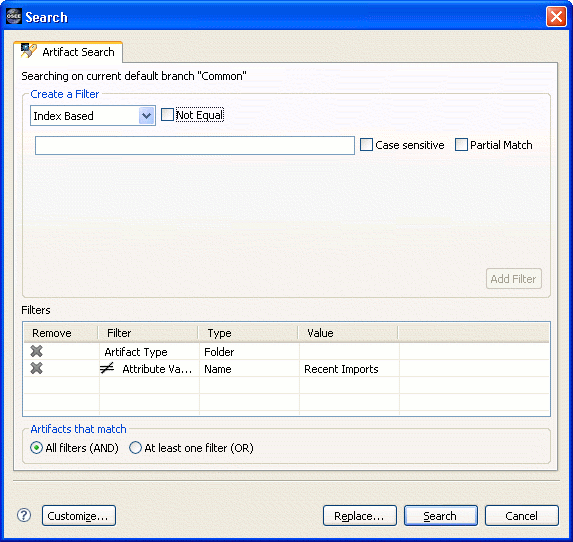

| Search | ||
|---|---|---|
|
|
|
|
| Views and Editors | Wizards | |

What it is The search page in the Eclipse Search window for finding artifacts on the default branch. How to use it
The Artifact Search page works by building a list of filters which that describe the desired artifacts. Filter types are selected from the drop down at the top of the page. After completing the options for the filter, pressing the Add Filter button will add the filter to the list of filters. If the Not Equal option is checked, then it will be added with the image signifying that the complement of the filter will be used.
Filters can be removed from the list at anytime by selecting the next to the filter.
The radio buttons in the Artifacts that match frame are used to control whether artifacts are returned that match every filter listed or at least one filter listed.
Once all of the options have been filled out, the Search button can be pressed to start the search against the default branch. For convenience the default branch is stated at the top of the search page. If a large number of artifacts will be returned then a confirmation will be displayed with a count of the artifacts that are about to be loaded.
The Search button will not be enabled until there is at least one filter in the list.
|
|

|
|
| Views and Editors | Wizards |